import rpy2
import matplotlib.pyplot as plt
import numpy as np
import plotly.graph_objects as goSimulation
GODE
Simulation
5.1.1 SPECTRAL NETWORK
\[g_{\theta} \star x = U g_{\theta}(\Lambda) U^{\top}x\]
\(x\)는 실수(\(n \times 1\) or \(1 \times n\)), \(g_{\theta}\)는 \(\theta\)의 대각행렬, \(\theta\)는 실수(\(n \times 1\) or \(1 \times n\))
\(U\)가 정규화된 그래프 라플라시안의 고유벡터 행렬일떄(\(L = I_N - D^{-\frac{1}{2}}AD^{-\frac{1}{2}} = U\Lambda U^{\top}\)), 고유값 \(\Lambda\)의 대각 행렬을 가진다.
Bruna가 재안한 operation에서 Henaff 는 평활 계수를 가진 파라미터로 차원적이며 집약적인 spectral filters 를 만듦
Henaff
\(W\)가 \(n \times n\) 대칭 행렬
\(L = I_N - D^{-\frac{1}{2}}WD^{-\frac{1}{2}}\)
\(D_{ij} = \sum_{ij}W_{ij}\)
\(U = (u_1, \dots, u_N)\)
\(X = \mathbb{R}^N\)
\(x *_Gg = U^{\top} (U_x \odot U)g)\)
\(\odot\): a point-wise product
\(w_g = (w_1, \dots, w_N)\)
\(x *_Gg := U^{\top} (diag(w_g)U_x)\)
$ |u|^k |x(u)|: x $
\(\hat{x} (\xi)\) is the Fourier tranform of \(x\)
\(w_g = \mathcal{K}\tilde{w}_g\)
\(\mathcal{K}\) is a smoothing kernal, \(\mathcal{K} \in \mathbb{R}^{N \times N_0}\)
forward, backward 가능
unsupervised graph estimation - $d(i,j) = |X_i - X_j |^2 - \(w(i,j) = exp^{\frac{d(i,j)}{\sigma^2}}\)$
supervised graph estimation - a fully-connected network - \(d_{sup}(i,j) = \| W_{1,i} - W_{1,j} \|^2\)
5.1.2 CHEBNET
\[g_{\theta} \star x \approx \sum^{K}_{k=0}\theta_k T_k (\tilde{L})x\]
The Chebyshev polynomials 체비셰프 다항식
\(\tilde{L} = \cfrac{2}{\lambda_{max}} L - I_N\)
\(\lambda_{max}\)는 라플라시안 고유값들 중 가장 큰 값
\(T_k (x) = 2xT_{k-1}(x) - T_{k-2} (x)\)
\(T_0 (x) = 1\), \(T_1(x) = x\)
imports
import tqdm
import numpy as np
import pandas as pd
import matplotlib.pyplot as plt
import plotly.express as px
import warnings
warnings.simplefilter("ignore", np.ComplexWarning)
from haversine import haversine
from IPython.display import HTMLimport rpy2
import rpy2.robjects as ro
from rpy2.robjects.vectors import FloatVector
from rpy2.robjects.packages import importrfrom plotly.subplots import make_subplotsEbayesThresh
%load_ext rpy2.ipython%%R
library(EbayesThresh)
set.seed(1)
x <- rnorm(1000) + sample(c( runif(25,-7,7), rep(0,975)))
#plot(x,type='l')
#mu <- EbayesThresh::ebayesthresh(x,sdev=2)
#lines(mu,col=2,lty=2,lwd=2)R + python
- R환경에 있던 x를 가지고 오기
%R -o x - R환경에 있는 ebayesthresh 함수를 가지고 오기
ebayesthresh = importr('EbayesThresh').ebayesthreshxhat = np.array(ebayesthresh(FloatVector(x)))#plt.plot(x)
#plt.plot(xhat)시도 1
_x = np.linspace(0,2,1000)
_y1 = 5*_x
_y = _y1 + x # x is epsilondf1=pd.DataFrame({'x':_x, 'y':_y, 'y1':_y1})w=np.zeros((1000,1000))for i in range(1000):
for j in range(1000):
if i==j :
w[i,j] = 0
elif np.abs(i-j) <= 1 :
w[i,j] = 1class SIMUL:
def __init__(self,df):
self.df = df
self.y = df.y.to_numpy()
self.y1 = df.y1.to_numpy()
self.x = df.x.to_numpy()
self.n = len(self.y)
self.W = w
def _eigen(self):
d= self.W.sum(axis=1)
D= np.diag(d)
self.L = np.diag(1/np.sqrt(d)) @ (D-self.W) @ np.diag(1/np.sqrt(d))
self.lamb, self.Psi = np.linalg.eigh(self.L)
self.Lamb = np.diag(self.lamb)
def fit(self,sd=5): # fit with ebayesthresh
self._eigen()
self.ybar = self.Psi.T @ self.y # fbar := graph fourier transform of f
self.power = self.ybar**2
ebayesthresh = importr('EbayesThresh').ebayesthresh
self.power_threshed=np.array(ebayesthresh(FloatVector(self.ybar**2),sd=sd))
self.ybar_threshed = np.where(self.power_threshed>0,self.ybar,0)
self.yhat = self.Psi@self.ybar_threshed
self.df = self.df.assign(yHat = self.yhat)
self.df = self.df.assign(Residual = self.df.y- self.df.yHat)
self.differ=(np.abs(self.y-self.yhat)-np.min(np.abs(self.y-self.yhat)))/(np.max(np.abs(self.y-self.yhat))-np.min(np.abs(self.y-self.yhat))) #color 표현은 위핸 표준화
self.df = self.df.assign(differ = self.differ)
#with plt.style.context('seaborn-dark'):
#plt.figure(figsize=(16,10))
#plt.scatter(self.x,self.y,c=self.differ3,cmap='Purples',s=50)
#plt.plot(self.x,self.yhat, 'k--')
def vis(self,ref=60):
fig = go.Figure()
fig.add_scatter(x=self.x,y=self.y,mode="markers",marker=dict(size=2, color="#9fc5e8"),name='y',opacity=0.7)
fig.add_scatter(x=self.x,y=self.yhat,mode="markers",marker=dict(size=2, color="#000000"),name='yhat',opacity=0.7)
fig.add_scatter(x=self.df.query('Residual**2>@ref')['x'],y=self.df.query('Residual**2>@ref')['y'],mode="markers",marker=dict(size=3, color="#f20505"),name='R square',opacity=1)
fig.add_trace(go.Scatter(x=self.x,y=self.y1,mode='lines',line_color='#0000FF',name='underline'))
fig.update_layout(width=1000,height=1000,autosize=False,margin={"r":0,"t":0,"l":0,"b":0})
return HTML(fig.to_html(include_mathjax=False, config=dict({'scrollZoom':False})))
def sub(self):
fig, axs = plt.subplots(2,2,figsize=(16,10))
axs[0,0].plot(self.power)
axs[0,0].plot(self.power_threshed)
axs[0,0].set_title('power_threshed')
axs[0,1].plot(self.power[1:])
axs[0,1].plot(self.power_threshed[1:])
axs[0,1].set_title('power_threshed 1:')
axs[1,0].plot(self.power[2:])
axs[1,0].plot(self.power_threshed[2:])
axs[1,0].set_title('power_threshed 2:')
axs[1,1].plot((self.df.Residual)**2)
axs[1,1].set_title('Residual square')
plt.tight_layout()
plt.show()
def subvis(self,ref=60):
fig = make_subplots(rows=2, cols=2, subplot_titles=("y", "yhat", "Residual Square", "Graph"))
fig.add_scatter(x=self.x,y=self.y, mode="markers",marker=dict(size=3, color="#9fc5e8"),name='y',opacity=0.7,row=1,col=1)
fig.add_trace(go.Scatter(x=self.x,y=self.y1,mode='lines',line_color='#000000',name='underline'),row=1,col=1)
fig.add_scatter(x=self.x,y=self.yhat, mode="markers",marker=dict(size=3, color="#999999"),name='yhat',opacity=0.7,row=1,col=2)
fig.add_trace(go.Scatter(x=self.x,y=self.y1,mode='lines',line_color='#000000',name='underline'),row=1,col=2)
fig.add_scatter(x=self.df.query('Residual**2>@ref')['x'],y=self.df.query('Residual**2>@ref')['y'], mode="markers",marker=dict(size=3, color="#f20505"),name='R square',opacity=1,row=2,col=1)
fig.add_trace(go.Scatter(x=self.x,y=self.y1,mode='lines',line_color='#000000',name='underline'),row=2,col=1)
fig.add_scatter(x=self.x,y=self.y, mode="markers",marker=dict(size=3, color="#9fc5e8"),name='y',opacity=0.7,row=2,col=2)
fig.add_scatter(x=self.x,y=self.yhat, mode="markers",marker=dict(size=3, color="#999999"),name='yhat',opacity=0.7,row=2,col=2)
fig.add_scatter(x=self.df.query('Residual**2>@ref')['x'],y=self.df.query('Residual**2>@ref')['y'], mode="markers",marker=dict(size=3, color="#f20505"),name='R square',opacity=1,row=2,col=2)
fig.add_trace(go.Scatter(x=self.x,y=self.y1,mode='lines',line_color='#000000',name='underline'),row=2,col=2)
fig.update_xaxes(range=[0, 2], row=1, col=1)
fig.update_yaxes(range=[-5, 15], row=1, col=1)
fig.update_xaxes(range=[0, 2], row=1, col=2)
fig.update_yaxes(range=[-5, 15], row=1, col=2)
fig.update_xaxes(range=[0, 2], row=2, col=1)
fig.update_yaxes(range=[-5, 15], row=2, col=1)
fig.update_xaxes(range=[0, 2], row=2, col=2)
fig.update_yaxes(range=[-5, 15], row=2, col=2)
fig.update_layout(width=1000,height=1000,autosize=False,showlegend=False,title_text="The result")
return HTML(fig.to_html(include_mathjax=False, config=dict({'scrollZoom':False})))class SIMUL2(SIMUL):
def fit2(self,sd=5,ref=60,cuts=0,cutf=995):
self.fit()
with plt.style.context('seaborn-dark'):
plt.figure(figsize=(16,10))
plt.scatter(self.x,self.y,c=self.differ3,cmap='Purples',s=50)
plt.scatter(self.df.query('Residual**2>@ref')['x'],self.df.query('Residual**2>@ref')['y'],color='red',s=50)
plt.plot(self.x,self.y1,'b--')
plt.plot(self.x[cuts:cutf],self.yhat[cuts:cutf], 'k--')
def fit3(self,sd=5,ref=30,ymin=-5,ymax=20,cuts=0,cutf=995):
self.fit()
with plt.style.context('seaborn-dark'):
fig, axs = plt.subplots(2,2,figsize=(16,10))
axs[0,0].scatter(self.x,self.y,c=self.differ,cmap='Purples',s=50)
axs[0,0].set_title('y')
axs[0,0].set_ylim([ymin,ymax])
axs[0,1].plot(self.x[cuts:cutf],self.yhat[cuts:cutf], 'k')
axs[0,1].plot(self.x[cuts:cutf],self.y1[cuts:cutf], 'b',alpha=0.5)
axs[0,1].set_title('yhat')
axs[0,1].set_ylim([ymin,ymax])
axs[1,0].scatter(self.df.query('Residual**2>@ref')['x'],self.df.query('Residual**2>@ref')['y'],color='red',s=50,marker='*')
axs[1,0].plot(self.x[cuts:cutf],self.y1[cuts:cutf], 'b',alpha=0.5)
axs[1,0].set_title('Residual square')
axs[1,0].set_ylim([ymin,ymax])
axs[1,1].scatter(self.x,self.y,c=self.differ,cmap='Purples',s=50)
axs[1,1].plot(self.x[cuts:cutf],self.yhat[cuts:cutf], 'k')
axs[1,1].scatter(self.df.query('Residual**2>@ref')['x'],self.df.query('Residual**2>@ref')['y'],color='red',s=50,marker='*')
axs[1,1].set_title('Graph')
axs[1,1].set_ylim([ymin,ymax])
plt.tight_layout()
plt.show()_simul = SIMUL2(df1)_simul.fit3(sd=5,ref=20,ymin=-10,ymax=15)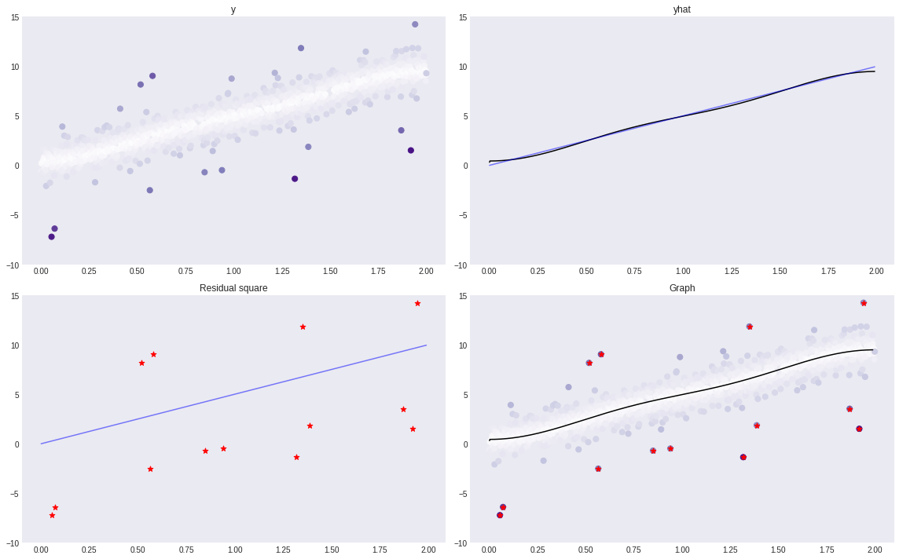
#_simul.vis()_simul.sub()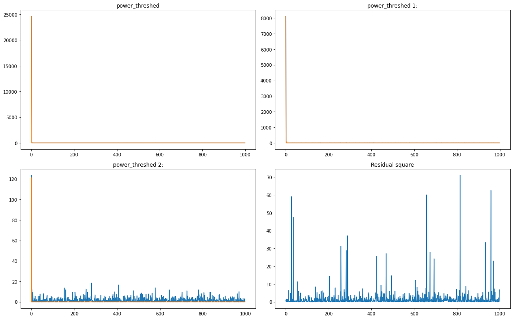
#_simul.subvis()시도 2
_x = np.linspace(0,2,1000)
_y1 = 5*_x**2
_y = _y1 + x # x is epsilondf2=pd.DataFrame({'x':_x, 'y':_y, 'y1':_y1})_simul = SIMUL2(df2)_simul.fit3(sd=6,ref=20,ymin=-10,ymax=25)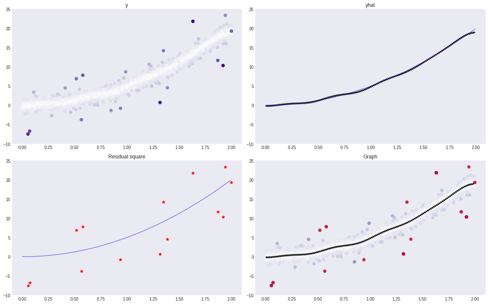
#_simul.vis()_simul.sub()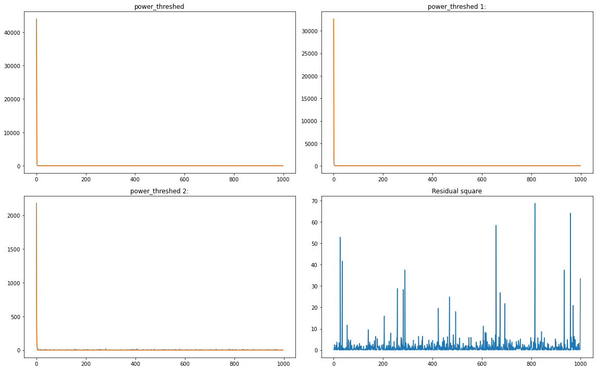
시도 3
_x = np.linspace(0,2,1000)
_y1 = 5*_x**3
_y = _y1 + x # x is epsilondf3=pd.DataFrame({'x':_x, 'y':_y, 'y1':_y1})_simul = SIMUL2(df3)_simul.fit3(ymin=-10,ymax=45)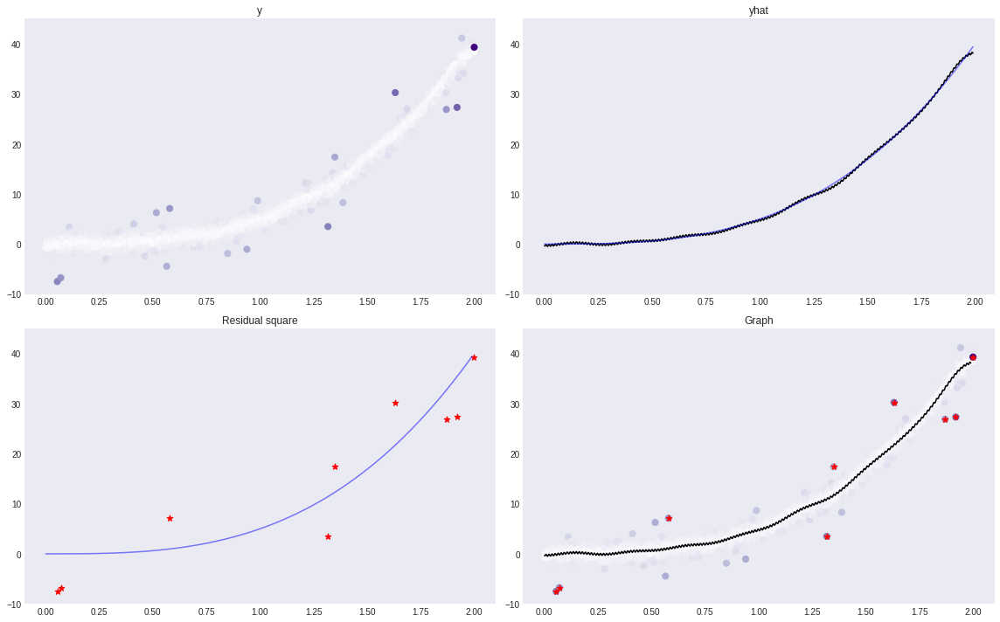
#_simul.vis()_simul.sub()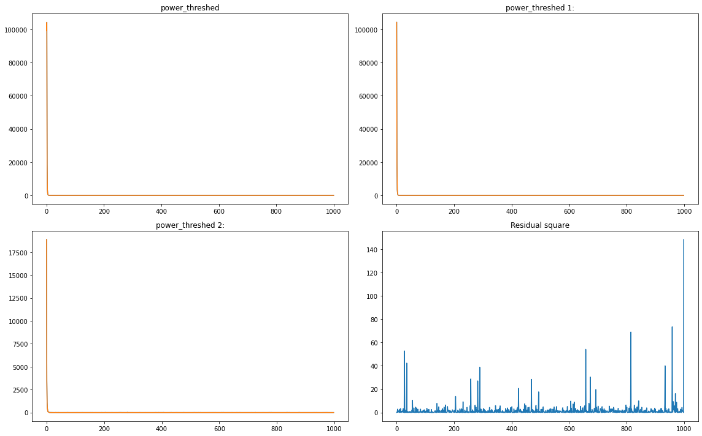
시도 4
_x = np.linspace(0,2,1000)
_y1 = -2+ 3*np.cos(_x) + 1*np.cos(2*_x) + 5*np.cos(5*_x)
_y = _y1 + x# _x = np.linspace(0,2,1000)
# _y1 = 5*np.sin(_x)
# _y = _y1 + x # x is epsilondf4=pd.DataFrame({'x':_x, 'y':_y, 'y1':_y1})_simul = SIMUL2(df4)_simul.fit3(ref=10,ymin=-15,ymax=10)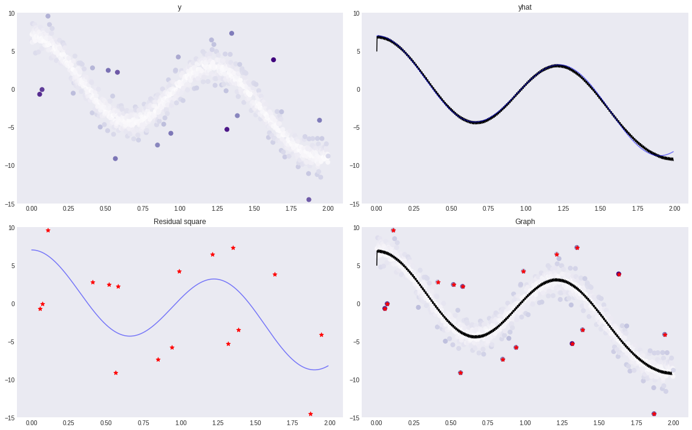
#_simul.vis()_simul.sub()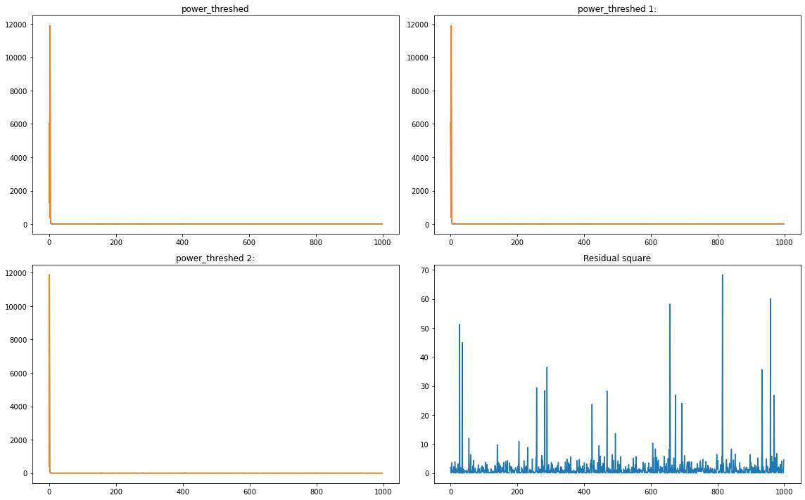
시도 5
# _x = np.linspace(0,2,1000)
# _y1 = 3*np.cos(_x) + 1*np.cos(_x**2) + 0.5*np.cos(5*_x)
# _y = _y1 + x # x is epsilon_x = np.linspace(0,2,1000)
_y1 = 3*np.sin(_x) + 1*np.sin(_x**2) + 5*np.sin(5*_x)
_y = _y1 + x # x is epsilondf5=pd.DataFrame({'x':_x, 'y':_y, 'y1':_y1})_simul = SIMUL2(df5)_simul.fit3(ref=15,ymin=-10,ymax=15,cuts=5)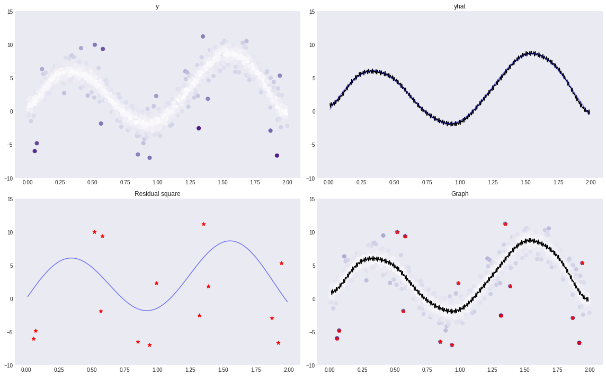
#_simul.vis()_simul.sub()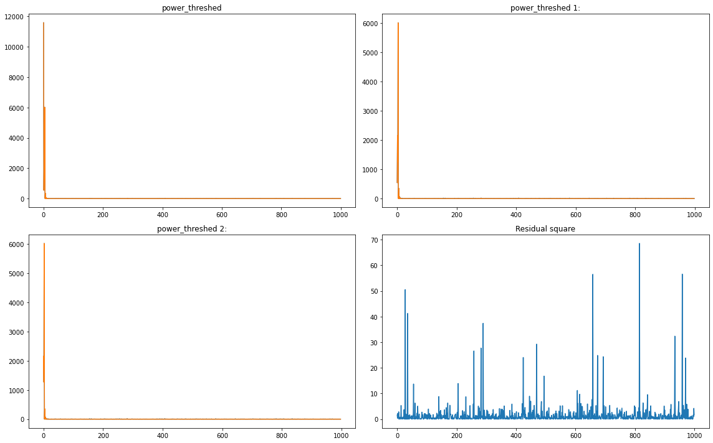
3D 시도 1
### Example 2
np.random.seed(777)
pi=np.pi
n=1000
ang=np.linspace(-pi,pi-2*pi/n,n)
r=2+np.sin(np.linspace(0,6*pi,n))
vx=r*np.cos(ang)
vy=r*np.sin(ang)
f1=10*np.sin(np.linspace(0,3*pi,n))
f = f1 + x# 1.
p=plt.figure(figsize=(12,4), dpi=200) # Make figure object
# 2.
ax=p.add_subplot(1,1,1, projection='3d')
ax.grid(False)
ax.ticklabel_format(style='sci', axis='x',scilimits=(0,0))
ax.ticklabel_format(style='sci', axis='y',scilimits=(0,0))
ax.ticklabel_format(style='sci', axis='z',scilimits=(0,0))
top = f
bottom = np.zeros_like(top)
width=depth=0.05
#ax.bar3d(vx, vy, bottom, width, depth, top, shade=False)
ax.scatter3D(vx,vy,f,zdir='z',s=10,marker='.')
ax.scatter3D(vx,vy,f1,zdir='z',s=10,marker='.')
ax.bar3d(vx, vy, bottom, width, depth, 0, color='Black',shade=False)
ax.set_xlim(-3,3)
ax.set_ylim(-3,3)
ax.set_zlim(-10,10)df = pd.DataFrame({'x' : vx, 'y' : vy, 'f' : f, 'f1' : f1})class SIMUL:
def __init__(self,df):
self.df = df
self.f = df.f.to_numpy()
self.f1 = df.f1.to_numpy()
self.x = df.x.to_numpy()
self.y = df.y.to_numpy()
self.n = len(self.f)
self.theta= None
def get_distance(self):
self.D = np.zeros([self.n,self.n])
locations = np.stack([self.x, self.y],axis=1)
for i in tqdm.tqdm(range(self.n)):
for j in range(i,self.n):
self.D[i,j]=np.linalg.norm(locations[i]-locations[j])
self.D = self.D + self.D.T
def get_weightmatrix(self,theta=1,beta=0.5,kappa=4000):
self.theta = theta
dist = np.where(self.D < kappa,self.D,0)
self.W = np.exp(-(dist/self.theta)**2)
def _eigen(self):
d= self.W.sum(axis=1)
D= np.diag(d)
self.L = np.diag(1/np.sqrt(d)) @ (D-self.W) @ np.diag(1/np.sqrt(d))
self.lamb, self.Psi = np.linalg.eigh(self.L)
self.Lamb = np.diag(self.lamb)
def fit(self,sd=5,ref=60): # fit with ebayesthresh
self._eigen()
self.fbar = self.Psi.T @ self.f # fbar := graph fourier transform of f
self.power = self.fbar**2
ebayesthresh = importr('EbayesThresh').ebayesthresh
self.power_threshed=np.array(ebayesthresh(FloatVector(self.fbar**2),sd=sd))
self.fbar_threshed = np.where(self.power_threshed>0,self.fbar,0)
self.fhat = self.Psi@self.fbar_threshed
self.df = self.df.assign(fHat = self.fhat)
self.df = self.df.assign(Residual = self.df.f- self.df.fHat)
self.dif=(np.abs(self.f-self.fhat)-np.min(np.abs(self.f-self.fhat)))/(np.max(np.abs(self.f-self.fhat))-np.min(np.abs(self.f-self.fhat)))
self.df = self.df.assign(dif = self.dif)
self.bottom = np.zeros_like(self.f)
self.width=0.05
self.depth=0.05
fig, axs = plt.subplots(2,2,figsize=(16,16),subplot_kw={"projection":"3d"})
axs[0,0].grid(False)
axs[0,0].scatter3D(self.x,self.y,self.f,c=self.dif,cmap='winter',zdir='z',s=50,marker='.',alpha=0.2)
axs[0,0].plot3D(self.x,self.y,[0]*1000,'black')
axs[0,0].set_xlim(-3,3)
axs[0,0].set_ylim(-3,3)
axs[0,0].set_zlim(-10,10)
axs[0,0].view_init(elev=20., azim=40)
axs[0,1].grid(False)
axs[0,1].scatter3D(self.x,self.y,self.fhat,color='black',zdir='z',s=50,marker='.',alpha=0.2)
axs[0,1].plot3D(self.x,self.y,self.f1,'blue')
axs[0,1].plot3D(self.x,self.y,[0]*1000,'black')
axs[0,1].set_xlim(-3,3)
axs[0,1].set_ylim(-3,3)
axs[0,1].set_zlim(-10,10)
axs[0,1].view_init(elev=20., azim=40)
axs[1,0].grid(False)
axs[1,0].scatter3D(self.df.query('Residual**2>@ref')['x'],self.df.query('Residual**2>@ref')['y'],self.df.query('Residual**2>@ref')['f'],color='red',zdir='z',s=100,marker='.',alpha=1)
axs[1,0].plot3D(self.x,self.y,self.f1,'blue')
axs[1,0].plot3D(self.x,self.y,[0]*1000,'black')
axs[1,0].set_xlim(-3,3)
axs[1,0].set_ylim(-3,3)
axs[1,0].set_zlim(-10,10)
axs[1,0].view_init(elev=20., azim=40)
axs[1,1].grid(False)
axs[1,1].scatter3D(self.x,self.y,self.f,c=self.dif,cmap='winter',zdir='z',s=50,marker='.',alpha=0.2)
axs[1,1].scatter3D(self.x,self.y,self.fhat,color='black',zdir='z',s=50,marker='.',alpha=0.2)
axs[1,1].scatter3D(self.df.query('Residual**2>@ref')['x'],self.df.query('Residual**2>@ref')['y'],self.df.query('Residual**2>@ref')['f'],color='red',zdir='z',s=100,marker='.',alpha=1)
axs[1,1].plot3D(self.x,self.y,self.f1,'black')
axs[1,1].plot3D(self.x,self.y,[0]*1000,'black')
axs[1,1].set_xlim(-3,3)
axs[1,1].set_ylim(-3,3)
axs[1,1].set_zlim(-10,10)
axs[1,1].view_init(elev=20., azim=40)
plt.tight_layout()
plt.show()
# p = plt.figure(figsize=(16,16))
# ax = p.add_subplot(1,1,1, projection='3d')
# ax.grid(False)
# ax.ticklabel_format(style='sci', axis='x',scilimits=(0,0))
# ax.ticklabel_format(style='sci', axis='y',scilimits=(0,0))
# ax.ticklabel_format(style='sci', axis='z',scilimits=(0,0))
# ax.scatter3D(self.x,self.y,self.f,c=self.dif,cmap='winter',zdir='z',s=50,marker='.',alpha=0.2)
# ax.scatter3D(self.x,self.y,self.fhat,color='black',zdir='z',s=50,marker='.',alpha=0.2)
# #ax.plot3D(self.x,self.y,self.fhat,'black')
# ax.scatter3D(self.df.query('Residual**2>@ref')['x'],self.df.query('Residual**2>@ref')['y'],self.df.query('Residual**2>@ref')['f'],color='red',zdir='z',s=100,marker='.',alpha=1)
# ax.plot3D(self.x,self.y,self.f1,'black')
# ax.plot3D(self.x,self.y,[0]*1000,'black')
# ax.set_xlim(-3,3)
# ax.set_ylim(-3,3)
# ax.set_zlim(-10,10)
def vis(self,ref=60):
fig = go.Figure()
fig.add_scatter3d(x=self.x,y=self.y,z=self.f, mode="markers",marker=dict(size=3, color="#9fc5e8"),name='f',opacity=0.2)
fig.add_scatter3d(x=self.x,y=self.y,z=self.fhat, mode="markers",marker=dict(size=3, color="#999999"),name='fhat',opacity=0.2)
#fig.add_trace(go.Scatter3d(x=self.x,y=self.y,z=self.fhat,mode='lines',line_color='#000000'))
fig.add_scatter3d(x=self.df.query('Residual**2>@ref')['x'],y=self.df.query('Residual**2>@ref')['y'],z=self.df.query('Residual**2>@ref')['f'], mode="markers",marker=dict(size=3, color="#f20505"),name='R square',opacity=1)
fig.add_trace(go.Scatter3d(x=self.x,y=self.y,z=self.f1,mode='lines',line_color='#000000',name='underline'))
fig.add_trace(go.Scatter3d(x=self.x,y=self.y,z=[0]*1000,mode='lines',line_color='#000000',name='z=0'))
fig.update_layout(width=1000,height=1000,autosize=False,margin={"r":0,"t":0,"l":0,"b":0})
return HTML(fig.to_html(include_mathjax=False, config=dict({'scrollZoom':False})))
def sub(self):
fig, axs = plt.subplots(2,2,figsize=(16,10))
axs[0,0].plot(_simul.power)
axs[0,0].plot(_simul.power_threshed)
axs[0,0].set_title('power_threshed')
axs[0,1].plot(_simul.power[1:])
axs[0,1].plot(_simul.power_threshed[1:])
axs[0,1].set_title('power_threshed 1:')
axs[1,0].plot(_simul.power[2:])
axs[1,0].plot(_simul.power_threshed[2:])
axs[1,0].set_title('power_threshed 2:')
axs[1,1].plot((_simul.df.Residual)**2)
axs[1,1].set_title('Residual square')
plt.tight_layout()
plt.show()
def subvis(self,ref=60):
fig = make_subplots(2,2,specs=[[{'type': 'surface'}, {'type': 'surface'}],[{'type': 'surface'}, {'type': 'surface'}]],subplot_titles=("f", "fhat", "Residual Square", "Graph"))
fig.add_scatter3d(x=self.x,y=self.y,z=self.f, mode="markers",marker=dict(size=3, color="#9fc5e8"),name='f',opacity=0.2,row=1,col=1)
fig.add_trace(go.Scatter3d(x=self.x,y=self.y,z=self.f1,mode='lines',line_color='#000000',name='underline'),row=1,col=1)
fig.add_trace(go.Scatter3d(x=self.x,y=self.y,z=[0]*1000,mode='lines',line_color='#000000',name='z=0'),row=1,col=1)
fig.add_scatter3d(x=self.x,y=self.y,z=self.fhat, mode="markers",marker=dict(size=3, color="#999999"),name='fhat',opacity=0.2,row=1,col=2)
fig.add_trace(go.Scatter3d(x=self.x,y=self.y,z=self.f1,mode='lines',line_color='#000000',name='underline'),row=1,col=2)
fig.add_trace(go.Scatter3d(x=self.x,y=self.y,z=[0]*1000,mode='lines',line_color='#000000',name='z=0'),row=1,col=2)
fig.add_scatter3d(x=self.df.query('Residual**2>@ref')['x'],y=self.df.query('Residual**2>@ref')['y'],z=self.df.query('Residual**2>@ref')['f'], mode="markers",marker=dict(size=3, color="#f20505"),name='R square',opacity=1,row=2,col=1)
fig.add_trace(go.Scatter3d(x=self.x,y=self.y,z=self.f1,mode='lines',line_color='#000000',name='underline'),row=2,col=1)
fig.add_trace(go.Scatter3d(x=self.x,y=self.y,z=[0]*1000,mode='lines',line_color='#000000',name='z=0'),row=2,col=1)
fig.add_scatter3d(x=self.x,y=self.y,z=self.f, mode="markers",marker=dict(size=3, color="#9fc5e8"),name='f',opacity=0.2,row=2,col=2)
fig.add_scatter3d(x=self.x,y=self.y,z=self.fhat, mode="markers",marker=dict(size=3, color="#999999"),name='fhat',opacity=0.2,row=2,col=2)
fig.add_scatter3d(x=self.df.query('Residual**2>@ref')['x'],y=self.df.query('Residual**2>@ref')['y'],z=self.df.query('Residual**2>@ref')['f'], mode="markers",marker=dict(size=3, color="#f20505"),name='R square',opacity=1,row=2,col=2)
fig.add_trace(go.Scatter3d(x=self.x,y=self.y,z=self.f1,mode='lines',line_color='#000000',name='underline'),row=2,col=2)
fig.add_trace(go.Scatter3d(x=self.x,y=self.y,z=[0]*1000,mode='lines',line_color='#000000',name='z=0'),row=2,col=2)
fig.update_layout(scene = dict(xaxis = dict(range=[-3,3],),
yaxis = dict(range=[-3,3],),
zaxis = dict(range=[-10,10],),),
width=1000,height=1000,autosize=False)
return HTML(fig.to_html(include_mathjax=False, config=dict({'scrollZoom':False})))_simul = SIMUL(df)_simul.get_distance()100%|██████████| 1000/1000 [00:01<00:00, 532.20it/s]_simul.D[_simul.D>0].mean()2.6888234729389295plt.hist(_simul.D[_simul.D>0])(array([ 66308., 64352., 68358., 177302., 166964., 114648., 94344.,
111136., 75508., 60080.]),
array([0.00628415, 0.54637775, 1.08647135, 1.62656495, 2.16665855,
2.70675214, 3.24684574, 3.78693934, 4.32703294, 4.86712654,
5.40722013]),
<BarContainer object of 10 artists>)
_simul.get_weightmatrix(theta=(2.6888234729389295),kappa=2500) _simul.fit(sd=5,ref=20)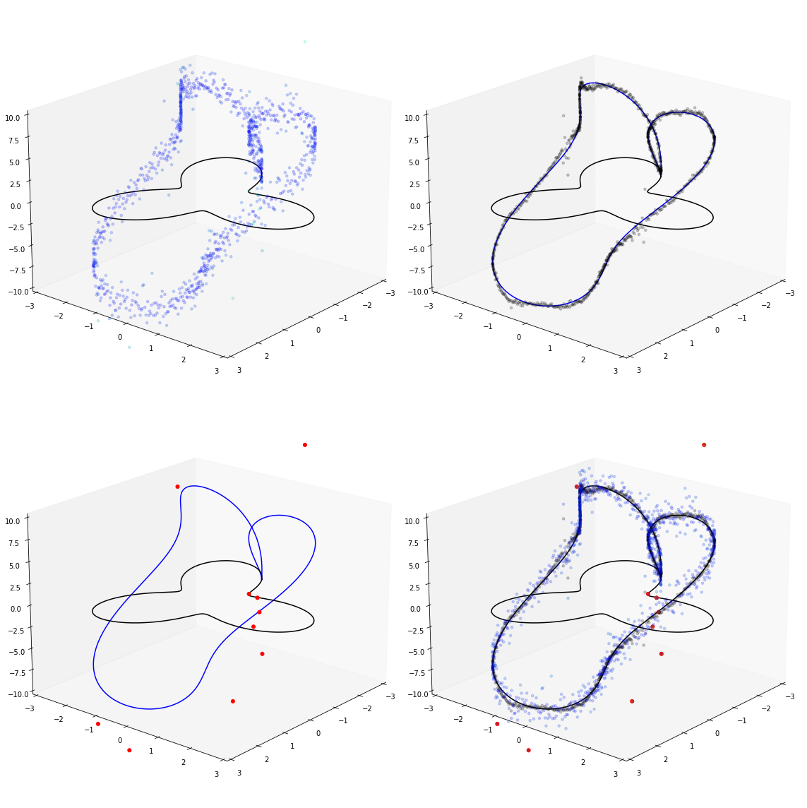
#_simul.vis(ref=20)#_simul.subvis(ref=20)_simul.sub()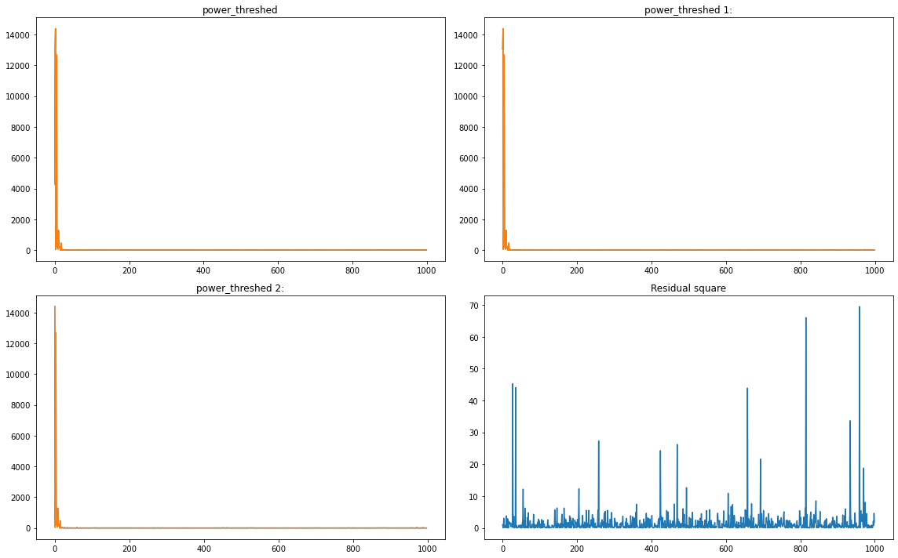
#_simul.subvis()3D 시도 2
### Example 2
np.random.seed(777)
pi=np.pi
n=1000
ang=np.linspace(-pi,pi-2*pi/n,n)
r=2+np.sin(np.linspace(0,8*pi,n))
vx=r*np.cos(ang)
vy=r*np.sin(ang)
f1=10*np.sin(np.linspace(0,3*pi,n))
f = f1 + xdf1 = pd.DataFrame({'x' : vx, 'y' : vy, 'f' : f,'f1':f1})_simul = SIMUL(df1)_simul.get_distance()100%|██████████| 1000/1000 [00:01<00:00, 521.69it/s]_simul.D[_simul.D>0].mean()2.6984753461932702plt.hist(_simul.D[_simul.D>0])(array([ 63450., 64118., 146970., 169756., 138202., 126198., 162650.,
75642., 28416., 23598.]),
array([0.0062838 , 0.60565122, 1.20501864, 1.80438605, 2.40375347,
3.00312089, 3.6024883 , 4.20185572, 4.80122314, 5.40059055,
5.99995797]),
<BarContainer object of 10 artists>)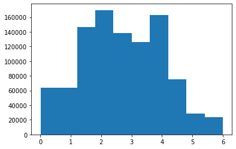
_simul.get_weightmatrix(theta=(2.6984753461932702),kappa=2500) _simul.fit(sd=5,ref=30)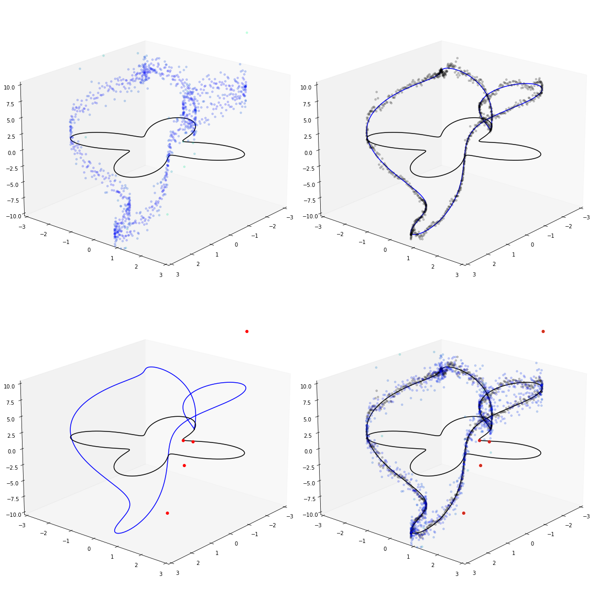
#_simul.vis(ref=50)_simul.sub()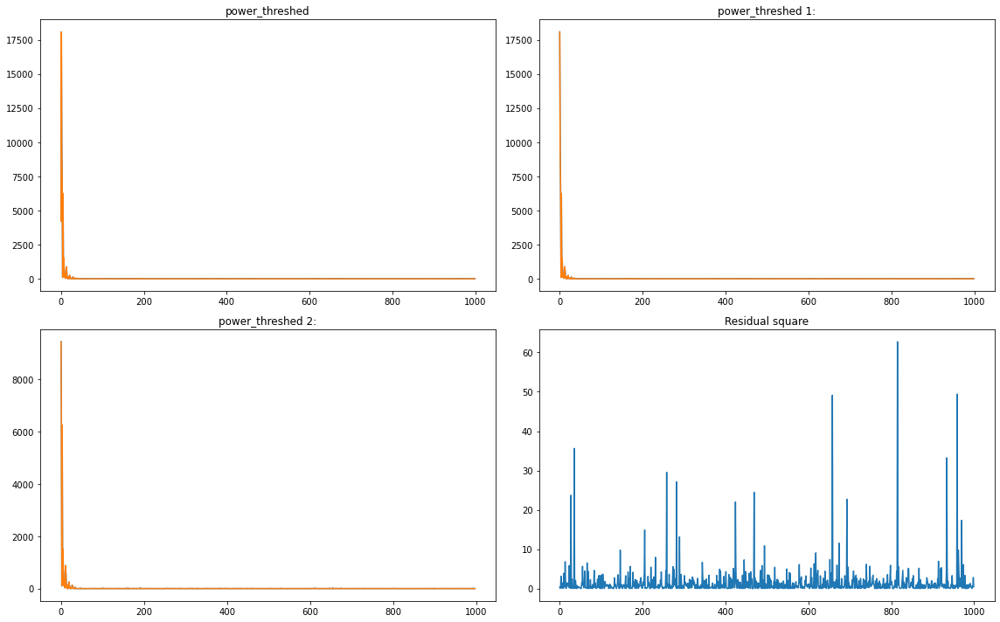
#_simul.subvis()3D 시도 3
### Example 2
np.random.seed(777)
pi=np.pi
n=1000
ang=np.linspace(-pi,pi-2*pi/n,n)
r=2+np.sin(np.linspace(0,6*pi,n))
vx=r*np.cos(ang)
vy=r*np.sin(ang)
f1=10*np.sin(np.linspace(0,6*pi,n))
f = f1 + xdf2 = pd.DataFrame({'x' : vx, 'y' : vy, 'f' : f,'f1':f1})_simul = SIMUL(df2)_simul.get_distance()100%|██████████| 1000/1000 [00:02<00:00, 463.80it/s]_simul.D[_simul.D>0].mean()2.6888234729389295plt.hist(_simul.D[_simul.D>0])(array([ 66308., 64352., 68358., 177302., 166964., 114648., 94344.,
111136., 75508., 60080.]),
array([0.00628415, 0.54637775, 1.08647135, 1.62656495, 2.16665855,
2.70675214, 3.24684574, 3.78693934, 4.32703294, 4.86712654,
5.40722013]),
<BarContainer object of 10 artists>)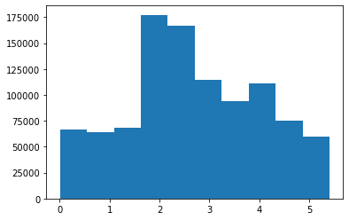
_simul.get_weightmatrix(theta=(2.6984753461932702),kappa=2500) _simul.fit(sd=5,ref=30)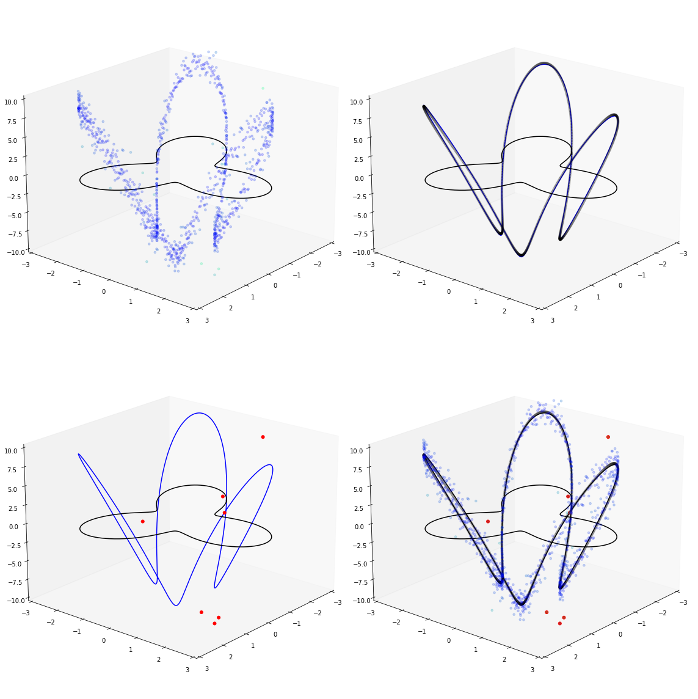
#_simul.vis(ref=50)_simul.sub()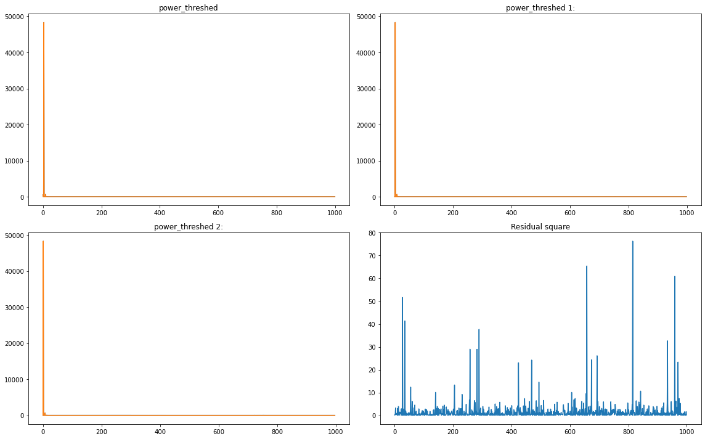
#_simul.subvis()